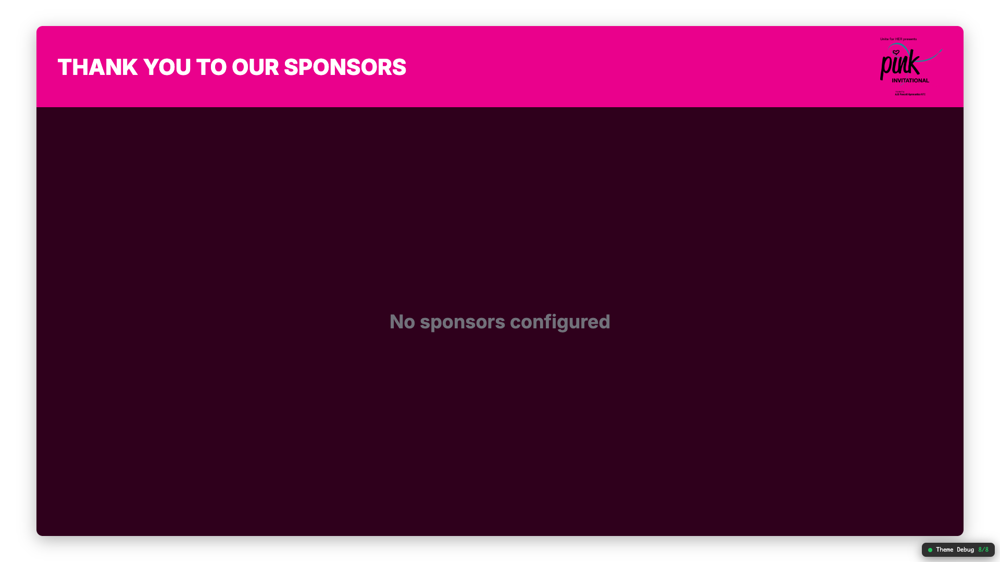

Task 1.8b — Iframe Graphics + WTW Sub-Graphics
PASS
Verify iframe-rendered graphics AND orchestration sub-graphics receive theme correctly.
- sponsors-thanks.html renders with pink header (#ea018c)
- who-to-watch-title.html renders with pink gradient background
- Theme colors applied to badge, headline bar, body
- No console errors in parent or iframe

Sponsors-thanks overlay with pink theme

Who-to-Watch title card with pink theme
Console: [theme-loader] Theme applied: Pink Invitational